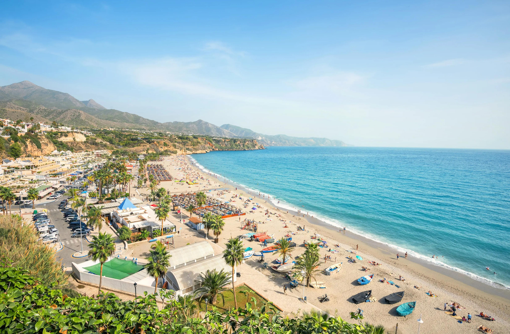

Asegura tu sitio en el verano perfecto
Del 25 de julio al 13 de septiembre. Las entradas anticipadas de los eventos con más tirón se agotan. No esperes al último momento.
Familia, pareja, cuadrilla o turista internacional: cada uno tiene su plan perfecto. Aquí están todos.

Plaza Paraíso · Plaza de Toros de Torremolinos
El verano perfecto en la Costa del Sol depende de con quién viajes: playas tranquilas y planes cortos si vas en familia, atardeceres y conciertos si vas en pareja, fiesta de día y de noche si vas con la cuadrilla. Torremolinos lo reúne todo en un solo punto: la Plaza de Toros, convertida este verano en Plaza Paraíso, con música, teatro y gastronomía del 25 de julio al 13 de septiembre.
La Costa del Sol no tiene un único verano perfecto. Tiene varios, y cada uno depende de quién te acompañe.
Solo entre junio y agosto de 2025, la provincia recibió 6,2 millones de visitantes, de los cuales 4,6 millones llegaron desde fuera de España. Una cifra que confirma algo que ya sabíamos: aquí cabe todo tipo de viajero. El reto no es encontrar planes. Es encontrar los que encajan con tu grupo.
Para el panorama completo de playas, gastronomía, museos y excursiones, tenemos una guía completa de planes de verano en Torremolinos que lo cubre por categorías. Esta guía va por otro camino: te lo cuenta según con quién vayas.
Si viajas con niños, lo primero es la playa. Torremolinos tiene tramos con aguas poco profundas y buen acceso, ideales para no complicarte el día. Te contamos cuál elegir en nuestra guía de las 6 mejores playas de Torremolinos.
Para la noche, hay un plan que casa bien con niños y adultos a la vez: Little Italy Gastro Fest, los días 27 y 28 de agosto en la Plaza de Toros. Es un festival gastronómico, no una fiesta nocturna al uso: pasta fresca, pizza al taglio y postres italianos en un ambiente de plaza mediterránea, con entrada gratuita para menores de 12 años.
El mejor plan en pareja combina un día tranquilo —un pueblo blanco o un atardecer junto al mar— con una noche que se salga de lo habitual. La Costa del Sol tiene de sobra para lo primero: Mijas, los miradores de Frigiliana o una cena con vistas en Málaga capital son valores seguros. Lo diferente está en la segunda parte.
En Plaza Paraíso, dos noches del programa encajan especialmente bien en pareja: Laura Gallego presenta «La Última Folclórica» el 7 de agosto, y Sigue la Luz, con Xenon Spain y Paca la Piraña, el 13 de agosto. Conciertos con espectáculo, en un recinto histórico, con menos ruido de discoteca.
Si prefieres organizar el día entero, revisa nuestra guía sobre cómo pasar un día perfecto en Torremolinos, pensada justo para exprimir la jornada sin prisas.
Este es el perfil que más opciones tiene en Torremolinos. De día, Los Álamos y Playamar tienen ambiente animado y beach clubs. De noche, la ciudad se reparte entre el paseo marítimo, La Nogalera, Pueblo Blanco y la Plaza de Toros —tal y como contamos en nuestra guía sobre dónde salir de fiesta en Torremolinos.
Dentro de Plaza Paraíso, tres citas están pensadas casi a medida para grupos de amigos:
Tienes el detalle completo en nuestra guía de actividades para grupos en Málaga.
La Costa del Sol atrae al turista internacional porque combina playa, cultura y ocio nocturno en distancias cortas, algo que pocos destinos mediterráneos ofrecen igual de bien. Los principales mercados emisores siguen siendo Reino Unido, Alemania, Países Bajos, Francia e Italia.
Si vienes de fuera y quieres una noche que resuma el verano español, apunta el 12 de septiembre: Bresh cierra el festival en Plaza Paraíso, con fama internacional por su ambiente y música latina. Si tienes varios días, combina Torremolinos con excursiones al Caminito del Rey o Ronda —todo detallado en nuestra guía de excursiones de día completo desde Torremolinos.
Lo que hace especial a Plaza Paraíso no es un solo evento, es que reúne perfiles muy distintos en el mismo espacio. El propio Ayuntamiento de Torremolinos lo ha planteado así, con una programación que integra música, artes escénicas y propuestas para públicos de todas las edades en un recinto histórico con horarios pensados para no molestar al vecindario.

Del 25 de julio al 13 de septiembre, la Plaza de Toros pasa de ser un espacio sin uso a ser el punto de encuentro del verano, con siete propuestas que van desde el humor hasta el folclore, pasando por la gastronomía y el cierre de fiesta con Bresh. No hace falta elegir solo un plan: puedes venir varias veces y vivir un verano distinto cada noche.

El mejor momento depende de lo que busques. Julio y agosto son los meses de ambiente pleno, con playas llenas y la agenda de eventos al máximo, aunque también los más concurridos y caros. Si prefieres menos aglomeración, septiembre tiene el mar templado, precios más asequibles y el cierre de la temporada con Bresh.
Para Plaza Paraíso en concreto, no hay mes malo: el festival cubre toda la temporada alta. Elige la fecha según el evento que más te interese —y reserva con antelación, sobre todo para Bresh o Loco Bongo, porque las entradas anticipadas se agotan.
Julio y agosto tienen el ambiente más intenso, con playas llenas y toda la agenda activa. Si prefieres menos gente y mejores precios, junio y septiembre también tienen buen tiempo y aún hay eventos en Plaza Paraíso.
Little Italy Gastro Fest (27-28 de agosto): festival gastronómico con entrada gratuita para menores de 12 años y ambiente de plaza mediterránea, no de discoteca.
Sí: Laura Gallego (7 ago) y Sigue la Luz (13 ago) tienen formato de espectáculo con menos ambiente de fiesta nocturna, ideales para una noche especial en un recinto histórico.
Solo en el verano de 2025, la provincia de Málaga recibió 4,6 millones de turistas internacionales, con Reino Unido, Alemania, Países Bajos, Francia e Italia como principales países emisores.
Sí, sobre todo para Bresh y Loco Bongo. Las entradas anticipadas suelen agotarse antes del día del evento, así que conviene comprarlas con tiempo en plazaparaiso.com/entradas.
Ya tienes el mapa completo: playas para la familia, atardeceres para la pareja, fiesta para la cuadrilla y un festival entero para el turista que quiere vivir el verano español de verdad. El punto en común de los cuatro planes está en el mismo sitio: la Plaza de Toros de Torremolinos.
Sigue leyendo: guía completa de planes en Torremolinos · dónde salir de fiesta · cómo pasar un día perfecto.
Del 25 de julio al 13 de septiembre. Las entradas anticipadas de los eventos con más tirón se agotan. No esperes al último momento.